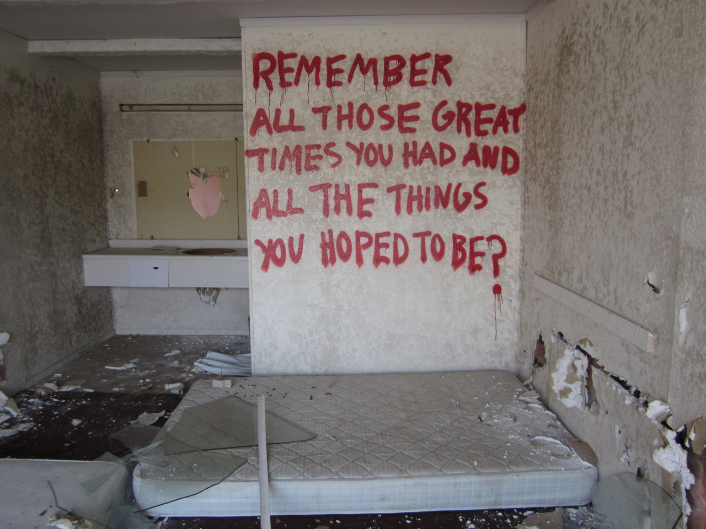

the requiem silently plays
it is summer
a lot of free time
honestly i dont really know what i wanna say, where i wanna go with this. it feels weird. my chest is heavy again. my friend rhi finished high school. i admire her. we met on wakfu, a blessing of a game. i really needed it at the time i found it. or rather, at the time i got access to it. her and jachym. hes another character. my two saviours. but the process (for lack of a better word) that went on in the winter of 2018 dissipated it.
a lot of death in that time. but before creation comes ruin, and creation it came.
but im sidetracking
its about now that im writing this. my rhi finished now. and she finished well. im so proud of her.
we havent been so close lately but thats one of the reasons why im this proud. she got a life of her own. and now its my turn. i have to make her proud now. make me proud of myself too.
it is summer
a lot of free time
a lot of things to be done
ill get a haircut and start swimming but we all know this isnt really much. there are two ways this could go:
1. i waste time, i let the summer pass, i dont do anything that matters. i dont grow. i stagnate.
well
i dont want that.
while its also such a great possibility of it happening is so high. i feel fear. amarillo is playing now. the train will hit soon. i can let it over me, as i did countless times before. i could
i could
2. i could move. i could force myself, gather all the strength in me, and i could move. i can move
lonely soul, youre not alone
you have yourself
ideally, this is what will happen: i research colleges. i go to those people that guide you. the word is slipping from me, but you get it. i pick 5 colleges. i look into them deeply. apply conditions. interviews. anything.
i actually feel terror typing this
why? i cant tell. but ill try to look for those guides.
i know my domain, so i have that as leverage over many. i want to work in artificial inteligence. i want to write creative code related to this interesting new domain. i want to create.
i will also work on a portofolio. i already started learning but at a really slow pace. i will correct that.
maybe a job? lets finish with the guide people first. making sandwiches is not really a mandatory thing. plus, little people is good enough experience for now.
work on myself. im not done yet. im still crippled with jealousy and hate. but this feels like such an easier thing to do. even if its completely the other way around.
but it will be okay
for i can see the future
and i know things about myself
like i know i am better
a future past which will never come to meet
one single hop
two vastly different bed sheets

a bed, with sheets, and heavenly revolving doors